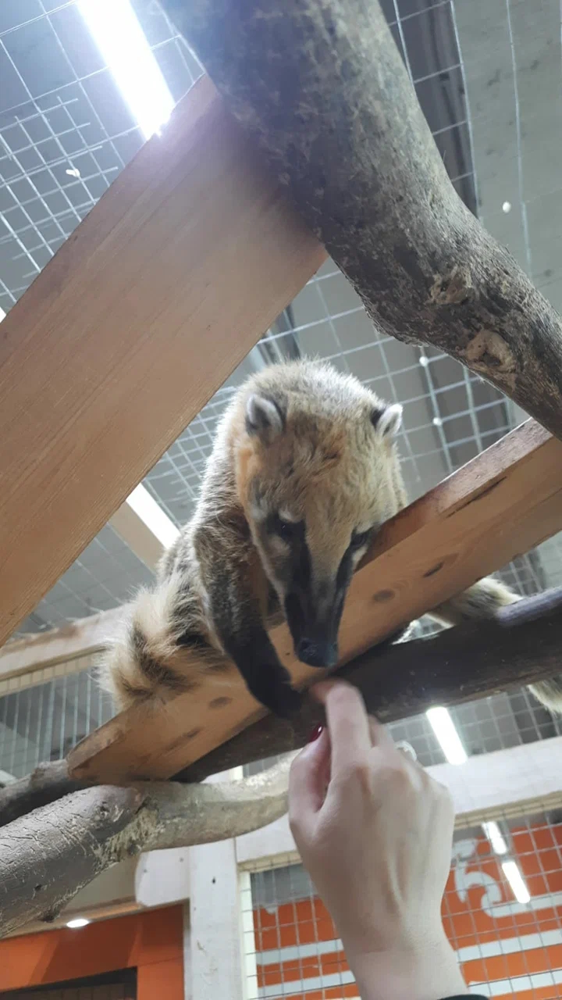
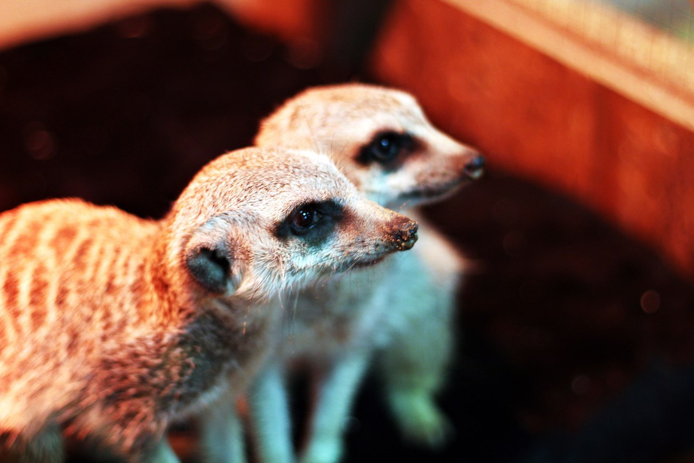

Сегодня с младшим сыном мы посетили мини-зоопарк. Именно о нем, кратко и хочу рассказать. Помещение зоопарка не слишком большое, зато работники - приветливые, а животные - очень общительные. Цена билета вполне приемлимая. А стоимость корма хотя и превышает его себестоимость, но вполне оправдана. Кормление животных доставляет ребенку удовольствие.
Какие там есть животные?
Хорек
Белый большой заяц
Еноты
Черепахи
Сова
Много морских свинок
Коза и барашек
Волнистые попугайчики
Суррикаты
Барсук
Носухи
Комната с кошками
Какие животные понравились нам больше всего?
Носуха — очень забавное животное с длинным носом и острыми когтями. Любит фрукты.

Суррикаты — у этой семейки было 3 маленьких детеныша. И кушали они живых личинок, которых мы побоялись давать сами. Хотя очень было интересно попробовать.
